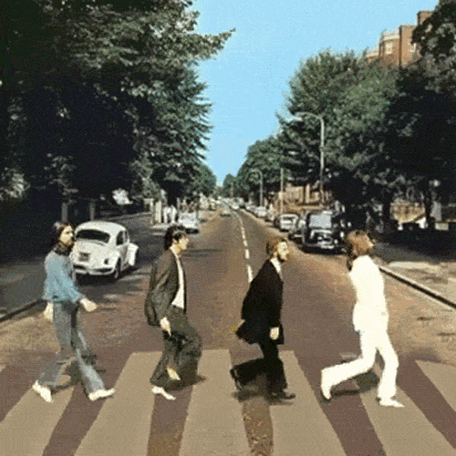

by Arindam Paul / @geek_paul
Amazon Campus
© Amazon 2015
“When you don’t know what you believe, everything becomes an argument. Everything is debatable. But when you stand for something, decisions are obvious.” ― Jason Fried, Rework
|
 |
What happens when a function is executed outside of it's original scope chains?
Moreover, what happens when a variable holds on to a function reference which get's defined in such deep function execution chain.
It is an implicit, permanent link between a function and it's scope chain..
A function definition's (lambda) hidden [[scope]] reference.
var data = "My Data!";
setTimeout(function() {
console.log(data); // prints "My Data!"
}, 3000);
function makeAdder(n) {
var inc = n;
var sum = 0;
return function add() {
sum = sum + inc;
return sum;
};
}
var adder3 = makeAdder(3);
Enough Slides, let's go directly to the demo and see it in Action.
"When there is freedom from mechanical conditioning, there is simplicity. The classical man is just a bundle of routine, ideas and tradition. If you follow the classical pattern, you are understanding the routine, the tradition, the shadow - you are not understanding yourself." - Bruce Lee